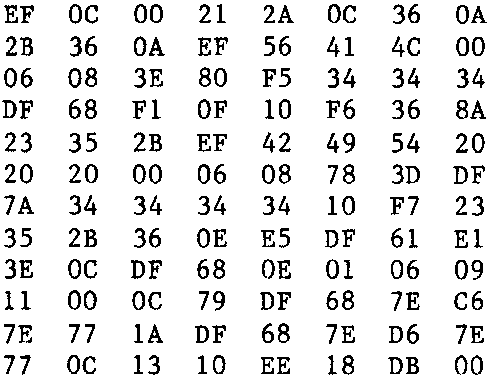

INMC 80 News |
May–September 1981 · Issue 4 |
| Page 10 of 71 |
|---|

This routine can be located at any location.
A couple of weeks ago, I received my copy of INMC 80/3. A week later I had built my THIRD Nascom 2. Can anyone beat that? At the time of receiving Issue 3, I did not have a Nascom, but have been sorely tempted each time a new INMC80 came through the post, or I got a “phone call from the two or three other people I know who have Nascom 2’s.
My first one was built in March ’80, followed by the second one in July ’80 for use at work. I had to sell my first one in November ’80 to buy a new car, but since then I have been planning to buy another. I am pleased to say that the third one is up and running. Two points though I would mention (1) could not Nascom manage to print pages in the documentation squarely on the paper; on all three books I have had a number of pages are printed at an angle. (2) I feel, along with others, that Nascoms should be repaired free of charge within say 90 days of kit purchase if the fault of non-operation is due to faulty chips or a faulty board. There appears to be a Nascom practise of charging regardless. My first model was fault free, the second had a board fault, and my third just completed had two faulty sockets, one on the Nas 2 main board and one on the Ram B board.
It is good to hear that Nascom have at last been taken over, lets hope some new products will see the light of day. I very much look forward to INMC80 newsletters dropping through my letter box, keep up the good work.
R. Scadden, Stratford-on-Avon, Warwicks.
(Faulty Nascoms should really be returned to your distributor, not to Nascom direct. Before buying check what your distributor’s attitude will be. I think that you will find most willing to rectify faulty components FOC, if not then go elsewhere – Ed.)
The mag is excellent. I find something valuable in it every issue. However, the article by Rory Johnston was reminiscent, in its attempt to whitewash the computer industry of moral and political responsibility for what it produces, of the blindness of atomic scientists to the consequences of their research forty-five years ago.
Most of the exaggeration of computer power is due to the industry’s overselling of itself. It is not due to the supposedly ignorant laypeople who have, quite simply, been conned.
Furthermore, whistle-blowing over Big Brother is not in the least bit out of place but a vital part of the campaign for the protection and reconquest of human rights. He claims that voice recognition technology can not yet automatically convert telephone conversations into printed text. Yes, he’s probably right – although even when it does become possible such technology would certainly remain secret for a very
| Page 10 of 71 |
|---|